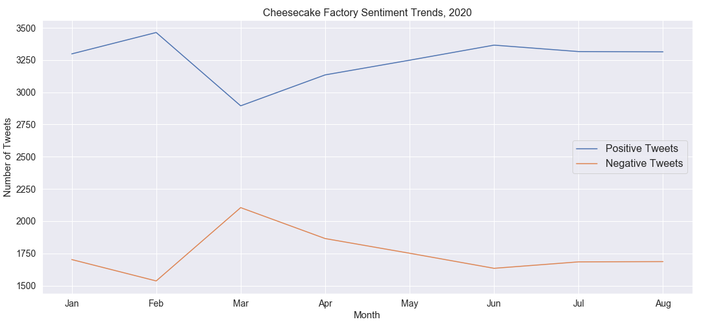

Why Tweet & Eat
Great companies strive to provide outstanding customer satisfaction like it's an additional product or service. Understanding the market's opinion about your business or brand name is extremely valuable to decision makers, but getting that information can be expensive and hard. Luckily for us, 330 million people around the world are already using Twitter to talk about their experiences.
Tweet & Eat takes advantage of this fact to deliver an easy way for companies to guage consumer sentiment toward their brand or product based on what people are tweeting about it.
Our Analytical Value
To demonstrate Tweet & Eat's analytical value, the Tweet and Eat algorithm was used to analyze sentiment trends of "Cheesecake Factory" during the first eight months of 2020. Over 60,000 tweets were subjected to the model.
After a noteworthy spike of negative tweets in March, sentiment has returned to baseline during the remainder of the year.
- What caused this spike in negative sentiment?
- Could The Cheesecake Factory have acted differently during the pandemic to avoid this spike in negative sentiment?
Tweet & Eat empowers decision makers to ask these questions and understand their business from a new perspective. This product is not solely confined to restaurants, the same principles can be applied to any keyword search term. Since our database consists of mainly restaurants and other businesses, we have restricted this web app to those industries.
Hand crafted by Logan Bonsignore